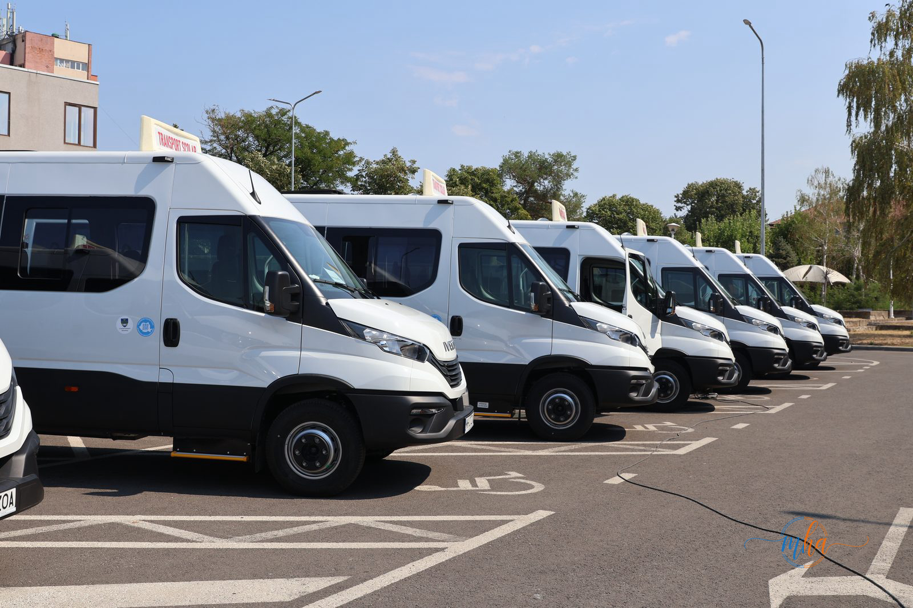
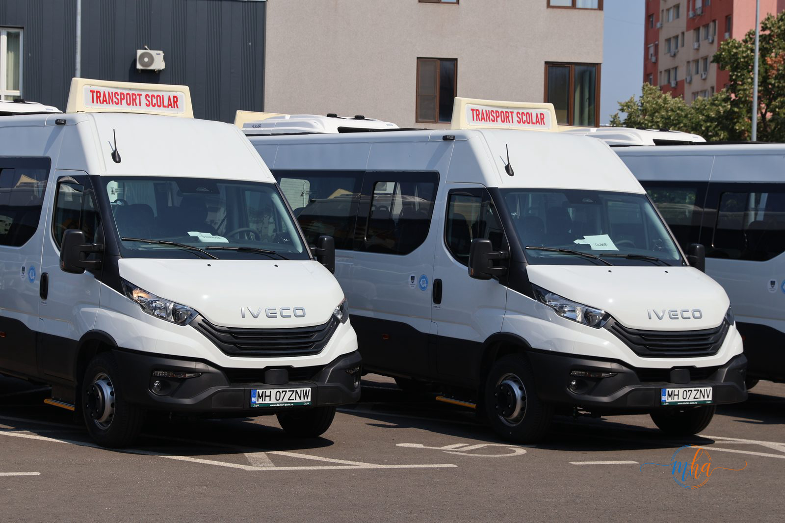

MEHEDINȚI – Șapte microbuze școlare hibride au ajuns în mai multe localități din județul Mehedinți, urmând să asigure transportul elevilor în condiții mai bune de siguranță și confort încă din primele zile ale noului an școlar. Vehiculele au fost achiziționate de Consiliul Județean Mehedinți, printr-un proiect finanțat de Administrația Fondului pentru Mediu.
Noile microbuze au fost repartizate primăriilor care aveau nevoie urgentă de mijloace de transport moderne pentru elevi și vor intra în circulație odată cu deschiderea cursurilor.
Ce comune au primit microbuzele
Pe lista localităților care au primit astfel de vehicule se află Husnicioara, Cireșu, Strehaia, Broșteni, Florești, Bâlvănești și Cujmir.
Pentru administrațiile locale, transportul elevilor reprezintă o necesitate stringentă, mai ales în comunele cu sate răsfirate și cu un număr important de copii care trebuie să ajungă zilnic la școală.

Noile microbuze școlare hibride, achiziționate de Consiliul Județean Mehedinți, aliniate înainte de a fi repartizate primăriilor din județ.
"Ca urmare a accesării de fonduri prin Administrația Fondului de Mediu, Consiliul Județean Mehedinți a achiziționat momentan 7 microbuze hibride. Venim în sprijinul administrațiilor locale care nu s-au regăsit în anexa 13 a Ministerului Educației, astfel că nu au putut accesa fonduri pentru a beneficia de aceste microbuze." a declarat Aladin Georgescu, președintele Consiliului Județean Mehedinți.
Primarii localităților beneficiare au salutat inițiativa Consiliului Județean, subliniind cât de mare era nevoia de vehicule noi pentru elevii din comunele lor.
"Salut inițiativa consiliului județean. Strehaia are aproape 2000 de elevi, iar transportul acestora era unul deficitar. Chiar era nevoie de acest microbuz." a declarat Ioan Giura, primarul orașului Strehaia.
"Era necesar pentru școala generală un microbuz. Numărul de elevi este unul mare, iar traseul parcurs până la școală este unul lung. Zilnic se fac peste 100 de kilometri. Ducem elevi la școală din 6 sate, sunt peste 200 de elevi, iar microbuzul cel vechi îl aveam de peste 12 ani." a declarat Alexandru Borugă, primarul comunei Broșteni.
Pentru unele dintre localități, noile vehicule reprezintă o investiție importantă, mai ales în condițiile în care microbuzele folosite până acum erau vechi și necesitau intervenții tehnice dese.

Interiorul unuia dintre noile microbuze hibride, dotat cu scaune moderne și spațiu suplimentar pentru bagaje.
Noile microbuze sunt hibride, ceea ce înseamnă un impact redus asupra mediului și un consum mai eficient de combustibil. În același timp, vehiculele oferă condiții mai bune de transport pentru elevii care fac zilnic naveta către unitățile de învățământ.
Alte trei microbuze vor ajunge în Mehedinți
Programul de înnoire a parcului auto destinat transportului școlar nu se oprește aici. Autoritățile județene anunță că, până la începutul anului viitor, în Mehedinți urmează să mai ajungă încă trei microbuze școlare hibride, prin același proiect finanțat de Administrația Fondului pentru Mediu.
Noile achiziții completează investițiile făcute în ultimii ani pentru transportul elevilor din județ. Anul trecut, Consiliul Județean Mehedinți a achiziționat, printr-un proiect finanțat din fonduri europene prin Planul Național de Redresare și Reziliență, 31 de microbuze școlare, care au fost repartizate altor 31 de primării din județ.
Prin aceste investiții, autoritățile urmăresc înnoirea parcului de microbuze școlare și asigurarea unor condiții mai sigure și mai confortabile pentru elevii din localitățile Mehedințiului.
Sursa: Consiliul Județean Mehedinți / Redacția MehedintiAzi.ro